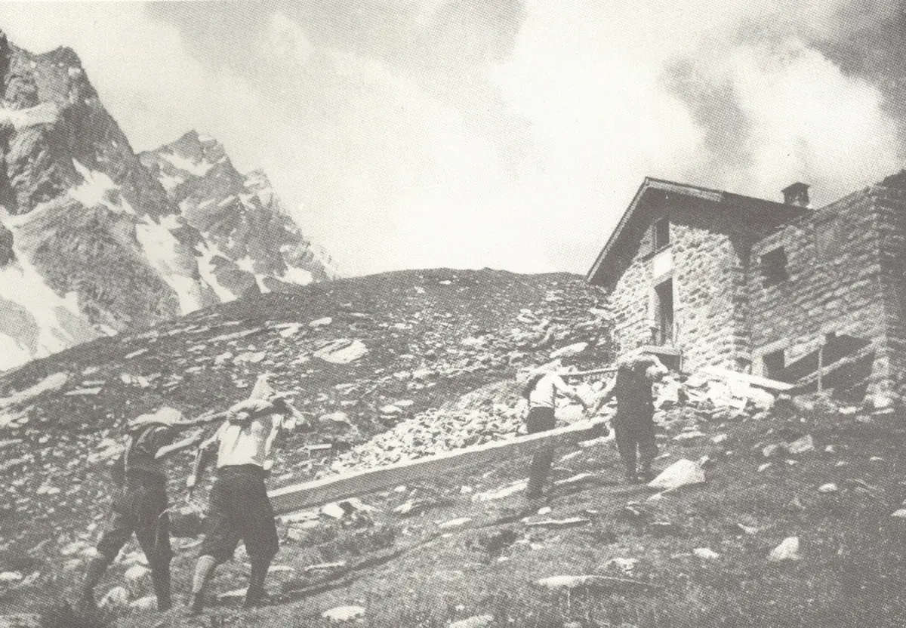
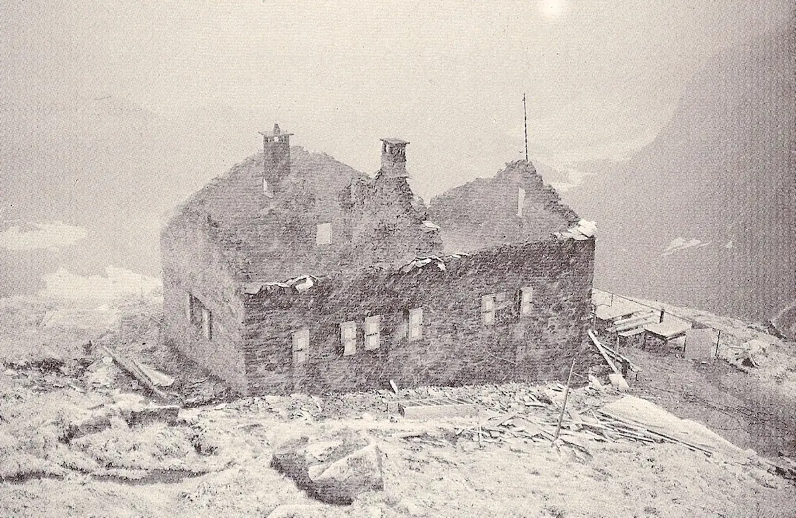

Geschichte der Hütte
Seit 1912 die erste Hütte der Tessiner Berge: erweitert, von einem Brand zerstört und schöner wieder aufgebaut.

Die Hütte wurde 1912 am Fuss des gleichnamigen Gipfels gebaut, auf der Leventiner Seite im oberen Val Piumogna. Der Name Campo Tencia ist eine Erfindung von 1858: Er bezeichnete den höchsten ganz auf Tessiner Boden gelegenen Berg (3072 m), als die berühmte Dufourkarte gezeichnet wurde. Er verbindet die Namen zweier Alpen des Patriziato di Prato, Campo und Tencia, im oberen Val Lavizzara auf der Seite des Maggiatals.
Am 11. August 1912 (nach einigen Archivquellen am 10. August) wurde die Hütte eingeweiht. 1932 legte Patocchi, wie immer die treibende Kraft, das Projekt für eine Erweiterung vor, und im Sommer 1933 wurde der neue Ostflügel gebaut.

Vierzig Jahre später folgten weitere Arbeiten zur Verstärkung und Verbesserung. Am 22. August 1975 zerstörte ein schwerer Brand das Werk vieler Jahre.
Sofort machte man sich an den Wiederaufbau, und die Hütte entstand grösser, schöner und zweckmässiger neu. Ihre Bauweise war schweizweit eine Neuheit, das Verdienst des Architekten Oscar Hofmann: nicht mehr das kantige Bild der klassischen Berghütte, sondern ein neuartiges, leichtes und elegantes Aussehen, mit einem Tragwerk aus verkleidetem und für die Höhe isoliertem Stahl. Die neue Einweihung fand am 25. September 1977 statt.

2008 kam mit dem Nordflügel eine neue Profiküche dazu. Am 11. August 2012 wurde das 100-Jahr-Jubiläum gefeiert. 2022 sorgte eine Wasserturbine für die Stromversorgung, die Photovoltaikanlage wurde erweitert und die Abwasserreinigung erneuert.